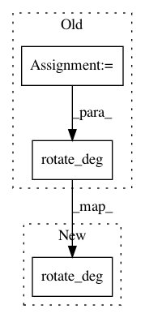

0810bfa2eda0aa041475ee93eb0db42d298340e0,lib/matplotlib/markers.py,MarkerStyle,_set_circle,#MarkerStyle#Any#,424
Before Change
elif fs == "left":
rotate = 180.
else:
rotate = 0.
self._path = self._alt_path = Path.unit_circle_righthalf()
self._transform.rotate_deg(rotate)
self._alt_transform = self._transform.frozen().rotate_deg(180.)
def _set_pixel(self):
self._path = Path.unit_rectangle()
After Change
else:
self._path = self._alt_path = Path.unit_circle_righthalf()
fs = self.get_fillstyle()
self._transform.rotate_deg(
{"right": 0, "top": 90, "left": 180, "bottom": 270}[fs])
self._alt_transform = self._transform.frozen().rotate_deg(180.)
def _set_pixel(self):
self._path = Path.unit_rectangle()
In pattern: SUPERPATTERN
Frequency: 4
Non-data size: 3
Instances
Project Name: matplotlib/matplotlib
Commit Name: 0810bfa2eda0aa041475ee93eb0db42d298340e0
Time: 2021-01-26
Author: anntzer.lee@gmail.com
File Name: lib/matplotlib/markers.py
Class Name: MarkerStyle
Method Name: _set_circle
Project Name: matplotlib/matplotlib
Commit Name: 0810bfa2eda0aa041475ee93eb0db42d298340e0
Time: 2021-01-26
Author: anntzer.lee@gmail.com
File Name: lib/matplotlib/markers.py
Class Name: MarkerStyle
Method Name: _set_octagon
Project Name: matplotlib/matplotlib
Commit Name: 0810bfa2eda0aa041475ee93eb0db42d298340e0
Time: 2021-01-26
Author: anntzer.lee@gmail.com
File Name: lib/matplotlib/markers.py
Class Name: MarkerStyle
Method Name: _set_plus_filled
Project Name: matplotlib/matplotlib
Commit Name: 0810bfa2eda0aa041475ee93eb0db42d298340e0
Time: 2021-01-26
Author: anntzer.lee@gmail.com
File Name: lib/matplotlib/markers.py
Class Name: MarkerStyle
Method Name: _set_x_filled